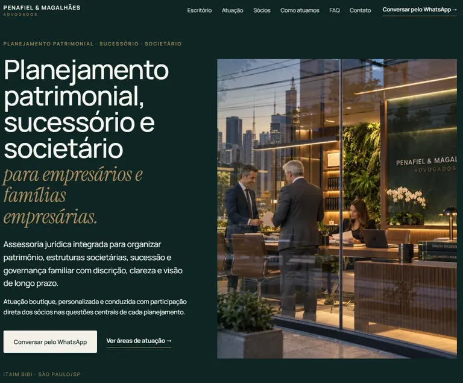
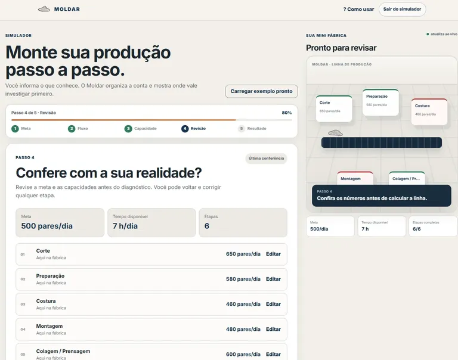
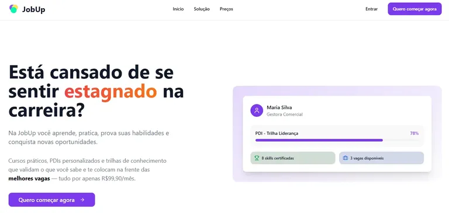
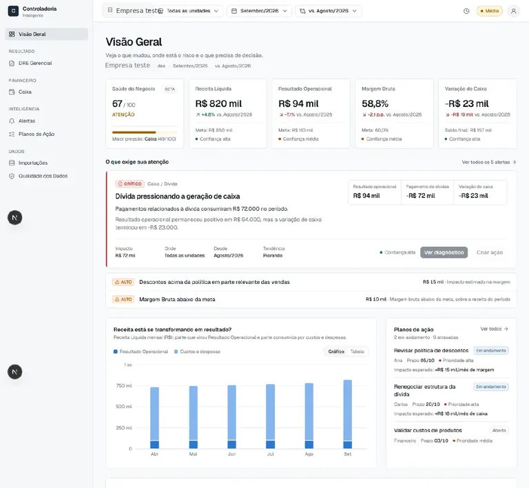

01
Projeto conceitual · Advocacia boutique
Penafiel & Magalhães
Conceito de presença digital para um escritório de planejamento patrimonial, sucessório e societário em São Paulo.
Ver projeto ↗THIAGO MARTINS / TM21
Sou Thiago Martins, engenheiro de produção. Desenvolvo sites, landing pages, simuladores e ferramentas digitais para empresas e profissionais liberais, com projetos no Rio Grande do Sul, Santa Catarina e atendimento remoto em todo o Brasil.
Rio Grande do Sul · Santa Catarina · Projetos remotos no Brasil

Penafiel & Magalhães
Moldar · simulador
JobUp · produto
Controladoria / BPOPORTFÓLIO / 08 PROJETOS
Selecione a categoria para ver os projetos. A prévia avança automaticamente e os projetos publicados podem ser abertos.
Projeto conceitual · Advocacia boutique
Conceito de presença digital para um escritório de planejamento patrimonial, sucessório e societário em São Paulo.
Ver projeto ↗Projeto demonstrativo · Odontologia
Projeto demonstrativo de presença digital para odontologia, estruturado para organizar áreas de atuação, apresentar o profissional e facilitar o contato.
Ver projeto ↗Projeto demonstrativo · Indústria alimentícia
Site institucional demonstrativo para uma indústria de panificação com atuação voltada ao consumidor, varejo e food service.
Ver projeto ↗Projeto demonstrativo · Cuidados domiciliares
Projeto demonstrativo de presença digital para cuidadora de idosos e técnica de enfermagem em Porto Alegre.
Ver projeto ↗Projeto próprio · Simulador industrial
Simulador web de capacidade produtiva desenvolvido inicialmente para operações da indústria calçadista.
Conhecer o Moldar ↗Projeto próprio · Produto digital
Produto digital próprio criado para organizar conteúdos e experiências de aprendizagem em uma plataforma independente.
Conhecer o THG Learn ↗Em desenvolvimento · Controladoria gerencial
Aplicação web em desenvolvimento para organizar informações financeiras e transformar dados operacionais em uma leitura gerencial mais estruturada.
Em desenvolvimento
Participação em produto · Produto e estratégia
Plataforma voltada ao desenvolvimento profissional. Minha atuação esteve concentrada em produto, modelo de competências, banco de perguntas, pesquisa e operação; o desenvolvimento técnico foi conduzido em outra frente do projeto.
Conhecer a JobUp ↗O QUE VOCÊ RECEBE
Uma presença digital clara, responsiva e pronta para apresentar seus serviços, facilitar o contato e começar a construir presença nas buscas.
Serviços, diferenciais, informações importantes e chamadas para contato distribuídos de forma clara.
Layout, paleta, tipografia, imagens e textos trabalhados para transmitir uma apresentação coerente e profissional.
Navegação, formulários, WhatsApp e interações revisados nos principais tamanhos de tela.
Títulos, hierarquia, sitemap, metadados e conteúdo organizados para facilitar rastreamento e indexação.
Publicação, conexão do domínio quando incluído, conferência final e acompanhamento inicial após a entrega.
* Ajustes iniciais: por até 60 dias após a publicação, estão incluídas pequenas correções de conteúdo dentro da estrutura aprovada. Novas páginas, integrações, funcionalidades ou mudanças de direção visual são orçadas separadamente.
PROCESSO
O projeto avança em etapas para organizar o conteúdo, definir a apresentação, construir a página e revisar tudo antes de colocar no ar.
Serviços, público, prioridades, referências e material disponível entram no primeiro alinhamento.
Resultado desta etapa: briefing e direção do projeto.Defino a ordem da página, os pontos que merecem destaque e os caminhos para contato.
Resultado desta etapa: estrutura e conteúdo-base.Paleta, tipografia, imagens e composição são alinhadas à identidade existente ou à direção aprovada.
Resultado desta etapa: linguagem visual definida.O conteúdo vira uma versão navegável, responsiva e pronta para as interações previstas no projeto.
Resultado desta etapa: primeira versão funcional.Celular, computador, links, formulário, WhatsApp, conteúdo, velocidade e configurações de busca passam por conferência.
Resultado desta etapa: versão pronta para publicação.Conecto o endereço do site quando previsto, publico a versão final e faço uma última conferência no ambiente real.
Resultado desta etapa: site publicado e validado.ATUAÇÃO
Também desenvolvo simuladores, ferramentas e produtos digitais quando o projeto precisa organizar regras, informação, cálculo ou tomada de decisão.
Sites institucionais e páginas comerciais construídos a partir do posicionamento, dos serviços, do público e do objetivo do negócio.
↗Ferramentas para organizar variáveis, regras e cenários de forma utilizável em operações, análises, diagnósticos ou atividades comerciais.
↗Aplicações voltadas a processos específicos, coleta de informação, consulta, análise ou apoio à decisão.
↗Estruturação inicial de produtos web, incluindo problema, fluxo, regras de negócio, experiência e desenvolvimento.
↗ATENDIMENTO
A operação está no Sul, com projetos para empresas e profissionais de outras cidades e estados conduzidos online quando fizer sentido.

Encontros sob combinação no Paranhana, Grande Porto Alegre e entorno. Projetos online em todo o RS, com conteúdo e SEO básico.

Atendimento remoto para profissionais e empresas em Florianópolis, Joinville, Blumenau, Itajaí e demais regiões.

Briefing, revisão, publicação e acompanhamento podem ser conduzidos integralmente online.
TRAJETÓRIA
Minha formação é em Engenharia de Produção, com pós-graduação em Engenharia Econômica e de Avaliações. Ao longo da carreira, passei por indústria, dados, operações, produtos financeiros e construção de negócios. Esses ambientes exigem uma base parecida: entender o contexto, organizar informação e transformar análise em execução.
Estrutura de produto, fichas técnicas, ERP e organização de informação industrial.
Indicadores, análise, experiência, processos e integração entre áreas.
Validação, resolução estruturada de problemas e melhoria de processos em ambiente industrial.
Previdência, investimentos, produto, treinamento, relacionamento com assessores e desenvolvimento de oportunidades.
Estruturação de processos, CRM, análise de negócios, inteligência artificial, automações, propostas, produtos digitais e organização da operação.
PROJETOS E PARCERIAS
Projetos digitais, ferramentas, simuladores, parcerias ou uma oportunidade profissional. Me explique o contexto e eu retorno.